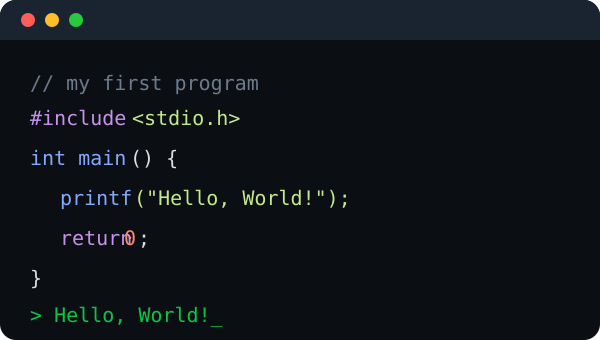

![]()
Hello!
Welcome to my little corner of the web! This page is a snapshot of who I am, where I'm coming from, and where I hope my computing journey takes me.
- Preferred name: Brent
- Program: BS Computer Science
- Year level: 1st Year (BSCS 1-A)
About Me

Hello, My name is Brent Darrell S. Nero, a first year BSCS student studying at Bicol University. I chose BSCS as my college program beacuse it's the one i'm most intrested in. Scince high school, I always had a fondness for tech.Thats why through this program, I hope one day I can make an impact on society using my intrest and the skills I learned.
My Path into Computing

My passion for tech started way back in highschool. I was in 8th grade watching TikTok's all day because we couldn't go outside due to a pandemic. One day, i video passed by my fyp that captured my interest. It was about scripting and learning how to use kali linux to pen test, That was the start of my ever growing curiousity. Along the way, I picked up some free programming classes online and also taken an intrest in machine learning.
My Hobbies
Hobbies
- I really like cycling, either in the mountains or the streets.
- I also really like photograpy.
- Gaming is also one of my hobbies, I really like Resident Evil, Call of duty and Wuthering waves.
My Favorites and Skills
Some of the websites I enjoy visiting is
- Steam because I often check for discounted games.
- BroCode For easy and quick tutorials.
- Spotify For music listening.
Skills
C Programming
Learning the basics in CS 102.
Photography
Basic compositioning editing as well as color grading.
Problem Solving
Breaking big problems into small steps.
Self-Learning
Picking up new tech through tutorials.
My Future Goals
My Top 3 Goals
- Graduate college and get my degree.
- Get certificates and real world experiences realted to my career.
- Become Cyber security analyst or a machine learning engineer.
Reflection
In making this activity i found html to be the easy part, it was simple and very readable for someone unfamiliar with the language. Making header's adding photo's and experimenting on diffrent elements was supper fun and I actually enjoyed making this project. However CSS was very hard for me, there were a lot of syntax i had to memorize, and styling rules. I Actually had to watch a bunch of vids in yt just to grasp the basic fundamentals. It was also really hard to add the scroll animation effects since I could not get them to show the way i want them to, In the end I just left IT as It IS and called it a day. So far I think i did good enough in this activity, But still I will try to further improve my CSS like adding more styles and diffrent animations. This activity has so far provided me with valuable skills that will help me in the future.